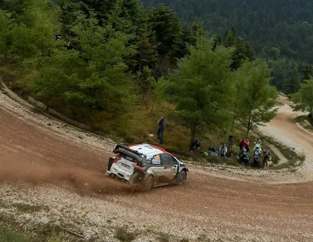
Ranking all the Acropolis Rally stages since 2021 - Part 2
Rally Acropolis returned to the World Rally Championship in 2021!
In these 3 years, 21 different special stages have been used (excluding the super-special ones) in Loutraki, Lamia, Itea, Viotia and Euritania.
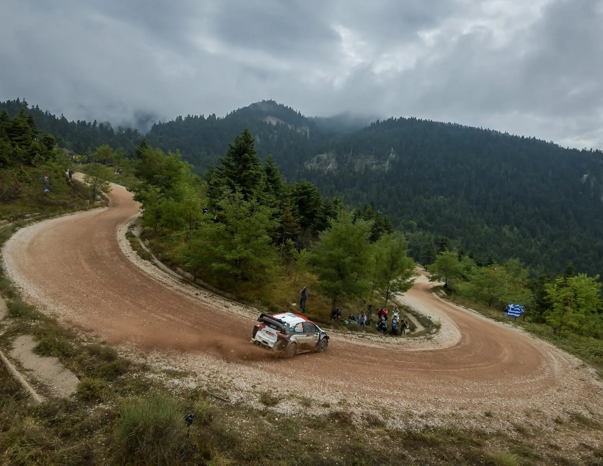
But which one has been the best, and which one the worst?
In this post we will see the stages from number 21 to number 15, with the other 2 parts also coming in the near future. The stages will be ranked based on:
- Height/altitude differences within the special
- Variety of roads within the stages (roads of different character)
- POV from onboard
- How "car breaking" they are
- And of course, my personal judgment
It is worth noting that the stages are ranked on the basis of their respective routes from 2021 and beyond, and only that, and of course how well suited they are to modern WRC cars.
Now, let's begin!
14. Harvati (2022)
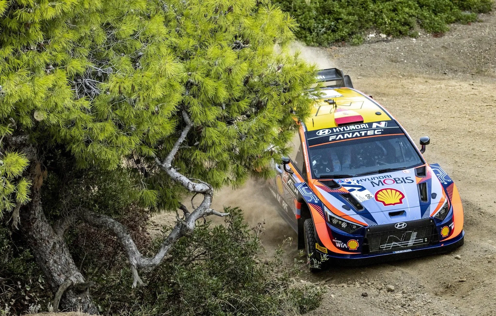
Harvati was used in 2022, as a "partner" of the Loutraki stage. The organisers used the finish of the 2021 version of Loutraki, and a piece of road that we rarely see in the WRC, and is normally used as part of the Pissia stage.
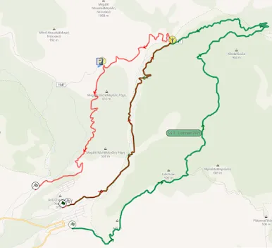
With red is the Harvati stage. With green you can see the 2021 version of the Loutraki stage.
The start of the stage is nice and fast, with a nice flow. From the moment the stage leaves the road it shared with the Loutraki stage, it becomes slow and technical, especially towards the end maybe too technical, because the road is quite narrow. In 2022, Sami Pajari suffered a double puncture and had to retire for the day.
Onboard of the stage
13. Pissia (2023)
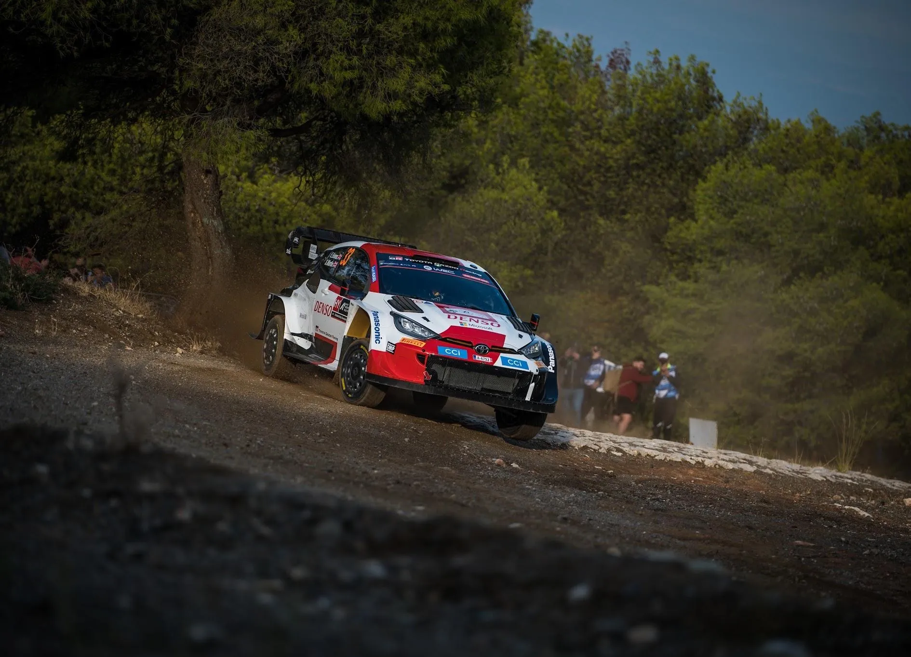
Pissia was my guilty pleasure last year. I didn't remember, and I didn't expect it to be that good. The start of the stage is quite technical, and becomes even slower and more technical when it meets the road shared with the 2022 Harvati stage.
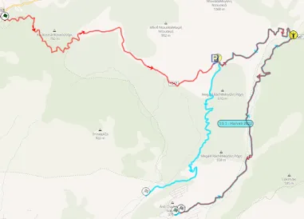
Last year's Pissia stage. With turqoise it's the Harvati stage
After that technical and slow section, the road becomes wider, faster and more flowing. In 2023 due to the torrential rain before the start of the rally, we even had some water splashes, as the dried up river actually had a decent amount of water! The stage is quite a car breaker, and even more so after the rain. The rain exposed many rocks on the surface of the stage, along with many kicks and bumps. One of which made Katsuta go up in the air!
12. Pyrgos (2021, 2022)
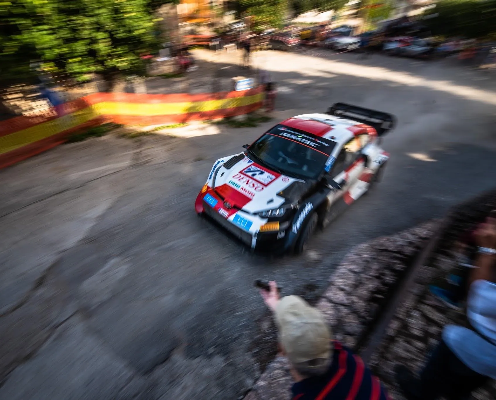
Pyrgos is the first stage that appears on this list that's been used multiple times with the same layout! In 2021 Pyrgos was the first stage on Sunday, with only one pass, but in 2022 it was on Saturday, and with two passes. In both years, Pyrgos was the longest stage of the rally at 33km. It's a stage that's quite slow and technical, with the average speed being 80km/h in the dry in 2022. Despite the stage being slow, it has a very nice flow, which is certainly a positive. The last 20km is my favourite part of the stage (they were used as the Dafni stage in Rally Fthiotidos in 2021), with the stage becoming a tad faster.
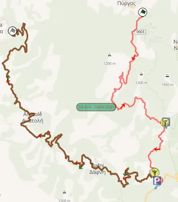
Map of the Pyrgos stage. With green you can see the Dafni stage from Rally Fthiotodos
In the last 20km the stage passes through 2 villages, bringing back memories from the older versions of the rally! After these two villages, the stage becomes more technical, and slower. The stage finishes off with a series of hairpins. In 2022, Greensmith and Serderidis retired with electrical problems on the second pass of the stage, and Pierre Louis Loubet had an off-road moment, that cost 10 to 15 seconds.
Onboard of the stage
11. Elatia - Rengini (2022)
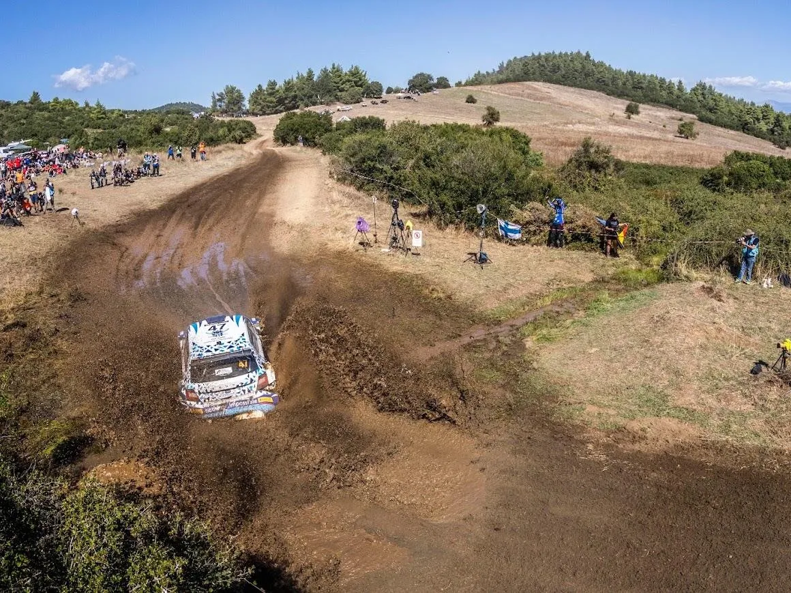
Elatia - Rengini was used as a single pass stage on the last day of the rally in 2022. The first 2.8km are slow twisty and technical, as the stage goes uphill, with a series of hairpins. For the next 3 kilometres, the stage becomes faster, with many medium to fast corners, as the stage goes downhill.
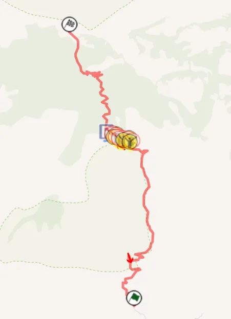
The map of the Elatia - Rengini stage
After those 3 kilometres, the stage changes character again, and becomes similar to the first part, only downhill, instead of uphill. The medium to fast speed corners are replaced by downhill hairpins and twisty sections, as the stage makes its way down the mountain. A feature of this special is the water splash it has about 5km into the stage. The second part of Elatia-Rengini is shared with the 2023 Elatia stage.
Onboard of the stage
10. Thiva (2021)
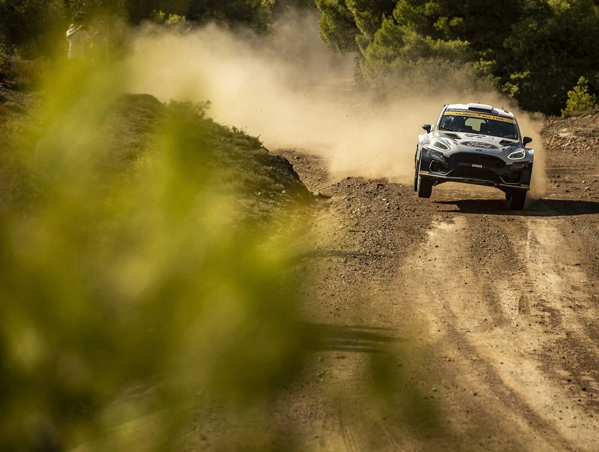
Thiva was only used in one edition of the Acropolis since its return to the WRC, as a one-pass stage on Friday. It's a stage with an exceptional amount of character changes and different roads, as the stage itself passes through a hill with numerous trails. The stage utilises a variety of rough, and relatively smooth parts.
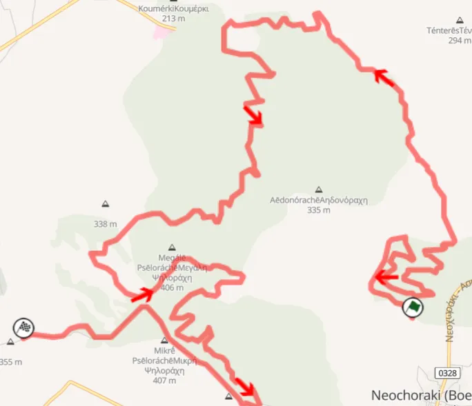
Map of the Thiva stage
The stage starts off with a technical, almost mickey mouse section, with the stage sort of looping onto the road where it started. After that, the stage becomes faster, with a small jump also, in a relatively narrow road. The stage keeps changing from narrow roads, to wider roads, and from slower ones to faster ones all the time, even passing through a shooting range. The final stretch is quite fast, on a wide, flowing road with almost zero slow corners. Elfyn Evans had to drive this stage on one gear in 2021!
9. Dafni (2022)
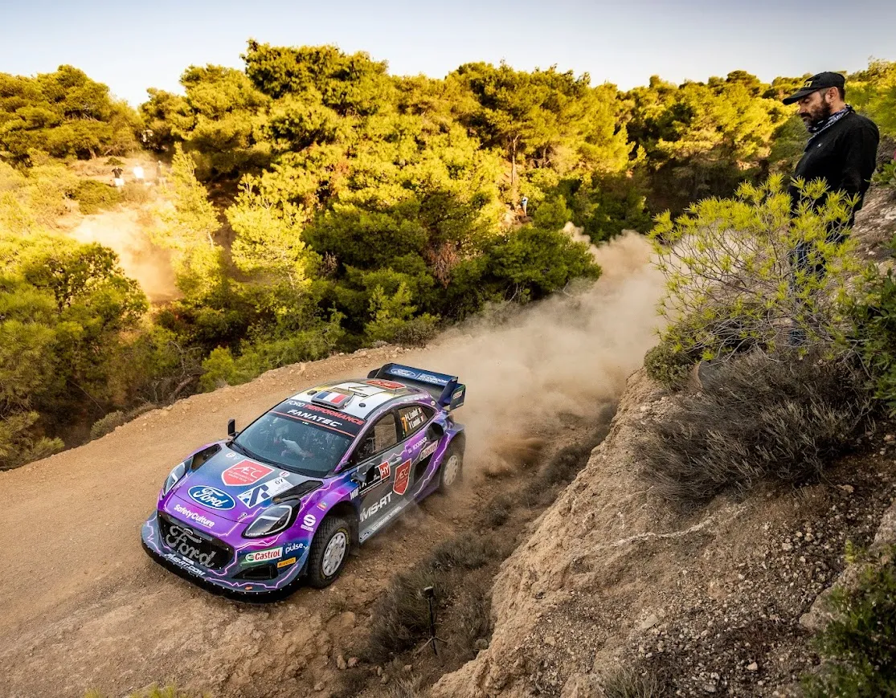
Dafni is one of the few "new" stages that have appeared in the Acropolis since it's return. I say "new", because it shares some parts with the very old Osios Meletios stage that was used in the 80s and early 90s, but for all intensive purposes it's a new stage. The stage was only used in 2022, and it was one of my favourites from that edition of the rally.
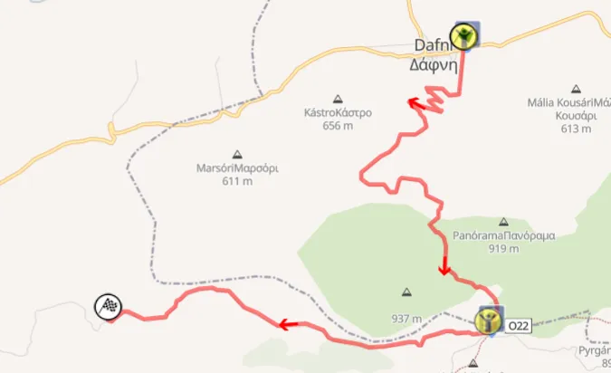
Map of the Dafni stage
The stage starts off uphill, with a series of hairpins in a relatively wide road. After that, the stage becomes semi-narrow and rough, but also quite fast and flowing, passing through a wind turbine farm. After a square right the stage turns to the route from the older Osios Merkourios stage, where the road initially becomes more technical, with a big drop on the right. About 2km from the end, the road becomes very narrow and rough, but it's also one of the faster parts of the stage! In 2022, Pierre Louis Loubet got his first stage victory on this stage, and also led a rally for the very first time!
Onboard of the stage
8. Elatia (2023)
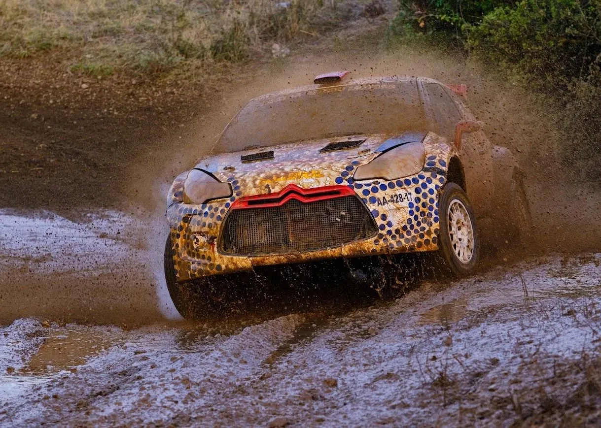
Elatia was the last stage of Friday last year, and also the longest stage of the rally. It's essentially a combination of the 2021 Elatia stage and the 2022 Rengini stage.
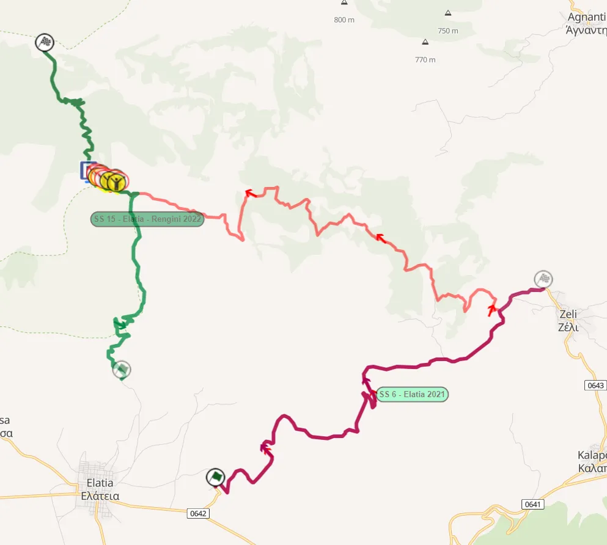
Map of the Elatia stage used in 2023. With red is the 2021 version, and with green it's the 2022 Rengini stage
The stage starts off with the fast (and a bit uninspiring) piece of road that was the 2021 Elatia stage, that placed 17th on the list. It's fast, relatively smooth and on a generally wide road. After 10km, the stage leaves that road and goes left on a narrower, more rough road. The road continues to be fast to medium speed until about 16km in, when it becomes more technical. The stage continues to be rough all the way until it merges with the road used in the 2022 Rengini stage, after which the stage becomes technical, with a series of hairpins as the cars make their way downhill. In 2023 the stage was quite rough due to the torrential rain in the area on the previous days, with many puddles, wet sections and mud. In 2023 we saw Ott Tanak win the stage, and Adrien Fourmaux dropping out of contention in WRC2, after he had to stop and change a wheel.
Onboard of the stage
All of the pictures come from the Rally Acropolis website, and the Rally Acropolis Archive.


Comments